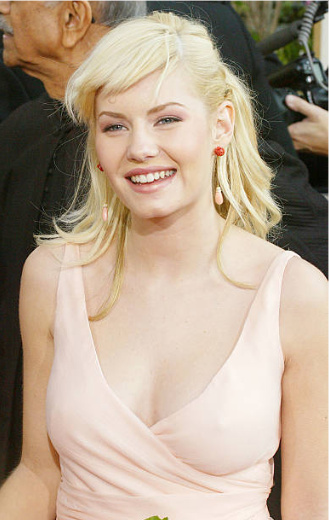

The bell
You have never heard my voice. On Sundays, when the last church bell has sounded, I sometimes keep the window open a moment longer. It would be a poor account of music that reckoned only the notes to which somebody had replied.

Dear reader, draw your chair a little nearer. The hand is my own, and towards the foot of a page the letters do sometimes run small.
I have one thing to set down this evening. Once I saw the likeness of a woman whose path had never crossed mine. I recall no remarkable circumstance about that day. Had I known how long I should remember her, I might at least have troubled to keep the date.
Her name was Elisha. There; the pen went easily enough once I came to her name.
Were I to have these leaves bound a second time, I think I should choose the green one sees in an emerald held sideways to a lamp. From across the room it seems quite dark. The person holding it sees further in.
So it has been with me. An acquaintance might have spent a whole evening in my company and seen very little. Yet how bright the walk home sometimes was.
I kept the first likeness between the pages of a book. The others made a book of their own.
You have never heard my voice. On Sundays, when the last church bell has sounded, I sometimes keep the window open a moment longer. It would be a poor account of music that reckoned only the notes to which somebody had replied.
I fancy every traveller brings home one little coin that will buy him nothing. He means to put it away. Years afterwards his thumb finds a familiar edge in his waistcoat pocket, and he is abroad again for half a minute. I should be sorry to be rid of mine.
I wrote your name and laid the blotting paper over it. When I lifted it, the faintest trace of the letters had taken there, backwards. It pleased me beyond reason to find your name twice upon my desk.
There will be someone who knows which chair you favour, and whether you take the last of your tea cold. I do not know these things. I am glad that someone does.
I shall put no direction on the envelope. You have your own affairs, your family, your pleasant interruptions. I would not take you from a single one of them in order that you might tell a stranger he has written a kind letter.
It is enough to have written it. A light reached me once, and tonight I could still remember its colour.
You may be turning these leaves when the hand that trimmed them is quite forgotten. Take my word for one small matter. The feeling was real, and the lady owed its author nothing.
If there is a person in your house to whom you have long wished to say a tender thing, you have my leave to close the book here. Mine can wait upon the shelf. Yours may even now be putting on a coat.
When at last I am an old man and the stairs have grown longer than they used to be, I hope my hand will still be steady enough to trim the wick. I have no appointment at the window. I have simply given my word about the light.
For years I have imagined a door at the head of a stair. In all that time I have neither knocked nor tried the handle. A silence would have been an answer. A footstep coming nearer would have been another. I had very little courage for either.
I begin to wonder whether the door was ever there. Of the landing I am certain. I have paced every inch of it.
Reading this over, I find I have made myself rather too agreeable a fellow. Let me mend the likeness whilst the ink is wet.
I can be patient across three thousand miles. At three feet, when a dear friend repeats a story, I have been known to look at the clock. I have forgotten birthdays. I have come in cross and called it fatigue, as if a fine long word could sweeten a short answer.
Distance has been a comfort to me. I chose a love in which I should never be tried by the thousand ordinary kindnesses of a day together. The love is true. This, too, is true. I should not like you to fold up the letter without knowing both.